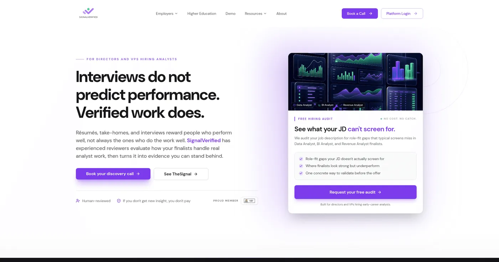
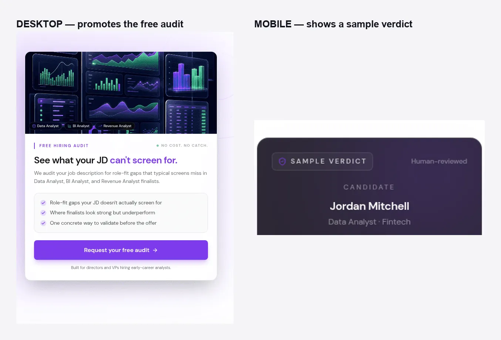
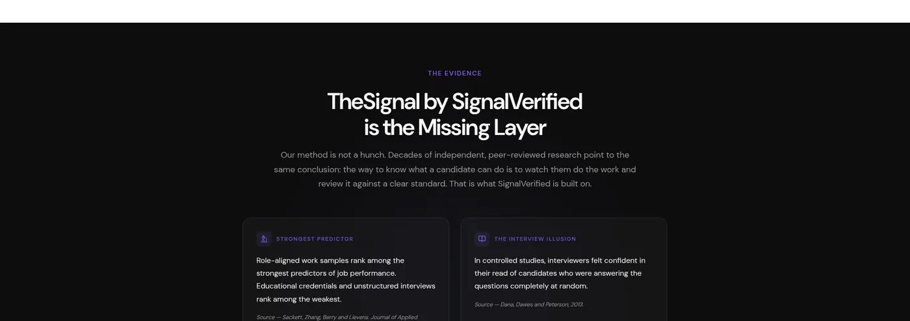
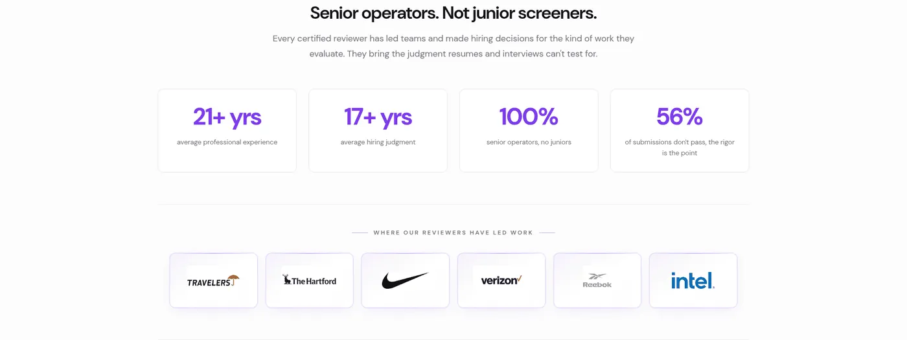
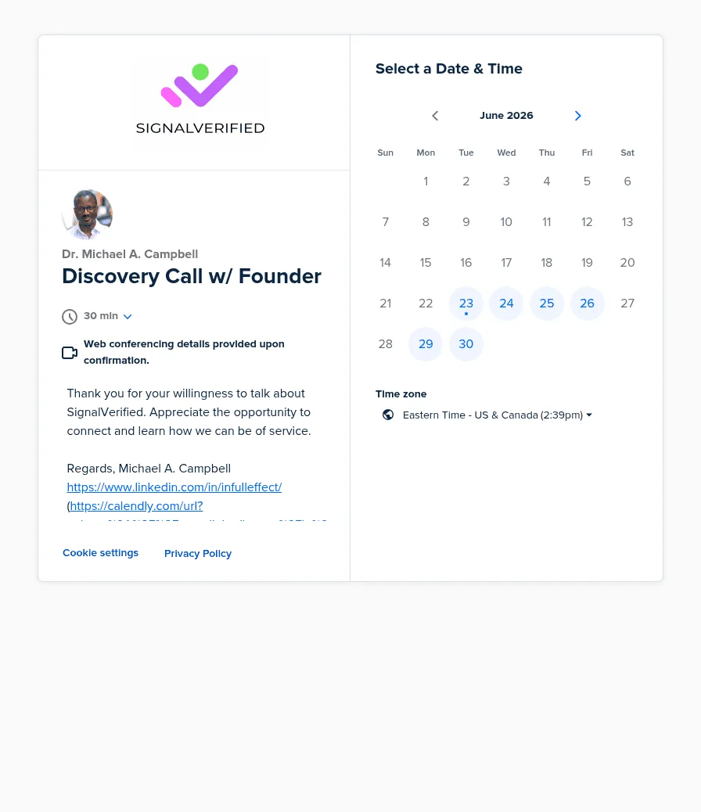

signalverified.net · June 2026
This is a screen-by-screen teardown of the activation flow, built from a recorded usability session, full-page screenshots, and a structured audit. SignalVerified sells a high-price, low-frequency service through a small number of screens, so each one carries real weight in the decision to book a call or submit a job description. The findings below follow the order a real visitor encounters them, from the homepage through to the platform login.
Your five highest-impact findings are below — and the last section shows how the 21-Day Activation Diagnostic fixes them.
Jump to next steps →
Both flows are short, which fits a high-price, low-frequency service. The friction is not step count — it is that the homepage does not make clear which path to choose, since CTAs for both are mixed together in the hero.
Flow A — sales-assisted: Homepage → Book a Call → Calendly → off-platform conversation.
Flow B — self-serve audit: Homepage → Free Hiring Audit Brief form → email follow-up.
Ranked by impact on your conversion goal — selected from an 8-finding evaluation across 11 UX dimensions.

The hero contains five distinct buttons — Book a Call, Platform Login, Book your discovery call, See TheSignal, and Request your free audit. Book a Call and Book your discovery call lead to the identical calendar page under different names.
In a recorded usability session, three people unfamiliar with the product were shown this screen and asked what it does. None reached the correct answer from the hero alone, and one said directly that they would not use the site to find candidates. Industry research on this exact pattern shows single-CTA pages convert at roughly 13.5% versus 10.5% for multi-CTA pages, and a single clear CTA has produced conversion lifts as high as 371% over pages with several competing actions.

The desktop hero card promotes the Free Hiring Audit Brief. The mobile version of the same card shows a sample candidate report instead, with a different layout and a different message entirely.
A visitor’s first impression of the product depends on which device they use. Someone shown the desktop site by a colleague, then opening the same link on a phone, sees a different primary offer and may not recognize it as the same product.

The product invents names for ordinary artifacts and uses them before defining them. The homepage headlines a section “TheSignal by SignalVerified is the Missing Layer” — “TheSignal” is the company’s name for what is essentially an insights report — and the How It Works page frames a three-word “human-governed, AI-delivered, auditable” standard, all presented as established terms a first-time visitor is assumed to already know.
Shown a competitor’s homepage immediately after this page in the same recorded session, one tester said: “I understand exactly what the other website was trying to tell me in five different pages.” That competitor’s hero states its function in one sentence with no invented terms.

Real client logos, named governance controls, and a specific rejection-rate statistic all live on this screen — several clicks deep in the path, after How It Works and Compare vs. Take-Home. None of this content appears on the homepage.
Social proof placed near a call to action has been shown to increase conversion by 84 to 270%, while the same proof buried deep in a site loses most of its effect. A visitor who leaves before reaching this screen never sees the evidence that would have answered their skepticism.

The only context offered is a thank-you note for the visitor’s “willingness to talk about SignalVerified.” There is no stated agenda, no expected outcome, and no guidance on what to bring to the call.
A visitor has to commit 30 minutes without knowing what will be covered, which raises the perceived cost of saying yes at the final step of this flow.
Chosen for the activation moment, not general brand positioning: a hiring decision-maker evaluating a verification or assessment product before committing budget.
| Benchmark | What it does well | Where it applies here |
|---|---|---|
| TestGorilla | States the product and the outcome in one sentence, with no invented terms, before any further claim. | Compress the hero to one sentence a hiring manager could repeat back correctly after reading it once. |
| Criteria Corp | Leads with outcome language and a single, clear category stated immediately. | Settle on one category name and use it consistently, rather than "verification," "evidence," and "signal" interchangeably. |
| CodeSignal | Positions itself clearly at the top of the hiring funnel, with one primary action and no competing offers in the hero. | Use as the contrast case for the after-interview positioning argument — show, rather than assert, why later-stage verification fits this buyer. |
Each finding maps to published research where the same kind of design change improved a real business metric. Two things to keep in mind: these are controlled studies and industry benchmarks from other companies, so the numbers won’t carry over one-to-one to SignalVerified — the industry, audience, and context are different, and we’re not promising the same results. What they show is that the moves we recommend aren’t hunches; they’re the same interventions that have produced meaningful gains elsewhere.
| Finding | What the research shows | Source |
|---|---|---|
| 1 · Competing CTAs | When the next step is ambiguous or several CTAs compete for the click, action is suppressed; clarity research recommends one clearly-labeled primary action over many. | Baymard — Button & CTA clarity |
| 2 · Desktop vs. mobile offer | Cross-device experience quality decides whether mobile visitors stay: 53% of mobile visits are abandoned when a page takes over 3 seconds, and bounce probability rises 113% as load goes from 1s to 7s. | Google — The need for mobile speed |
| 3 · Undefined proprietary terms | Content that’s hard to parse raises cognitive load, makes it harder to build a mental model of the product, and lowers perceived trustworthiness in usability testing. | Nielsen Norman Group — Content dispersion |
| 4 · Proof buried deep | Reassurance placed at the decision point shapes whether users trust an unfamiliar brand; in Baymard’s research, perceived credibility matters more to most users than technical credentials. | Baymard — Trust signals |
| 5 · No agenda before booking | Reducing friction and unknowns at the final conversion step is a large lever: Baymard estimates better checkout and sign-up flow design as up to a ~35% conversion-rate opportunity across 300+ benchmarked sites. | Baymard — Checkout usability |
This diagnostic was built from a recorded usability session with three first-time visitors, full-page screenshots of every primary screen, and a structured 11-dimension UX framework covering Nielsen's heuristics, conversion rate optimization, information architecture, visual and brand design, accessibility, mobile responsiveness, performance, SEO, competitor benchmarking, and content hierarchy. Findings were prioritized using the recorded session as the primary evidence source, supported by current conversion-rate research where relevant. The tags on each finding (for example CRO-03 or ACC-02) are codified criterion IDs that map the finding to the specific principle it relates to within our 11-dimension framework, so every call traces back to an established standard rather than opinion.
SignalVerified sells a high-price, low-frequency service through a small number of screens, so each one carries real weight in a visitor's decision to book a call or submit a job description. This diagnostic follows the order a real visitor encounters those screens, rather than grouping findings by category, to show exactly where the activation flow gains or loses a visitor's trust.
A split homepage path, reviewer stats that contradict each other, and a slow, half-empty-looking page all chip away at the same thing: a hiring leader’s confidence to book that first call. For a sales-led business where pipeline is the constraint, every one of these is a conversation that quietly doesn’t happen. It’s a focused 3-week engagement where we audit, diagnose, and redesign the flow behind these issues, then hand you a clickable high-fidelity prototype, an annotated flow map, and the rationale behind every decision — so your team can build with confidence.
Book an Intro Call